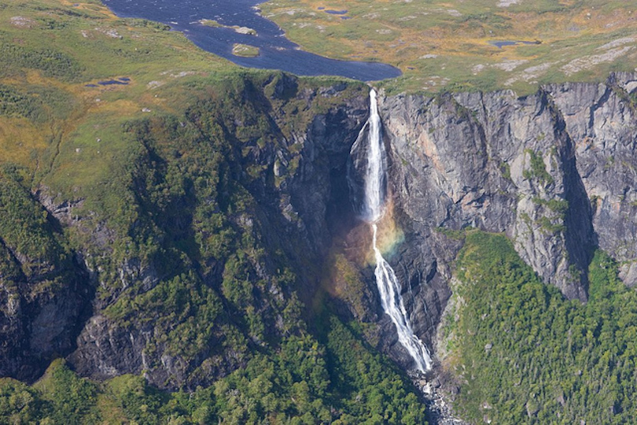
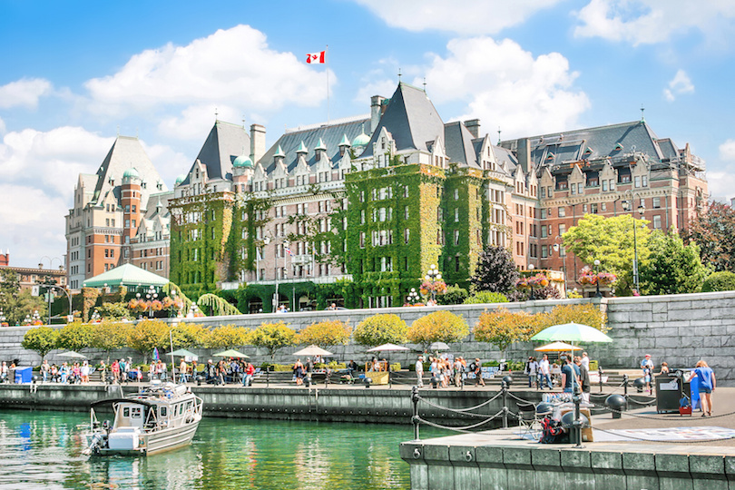
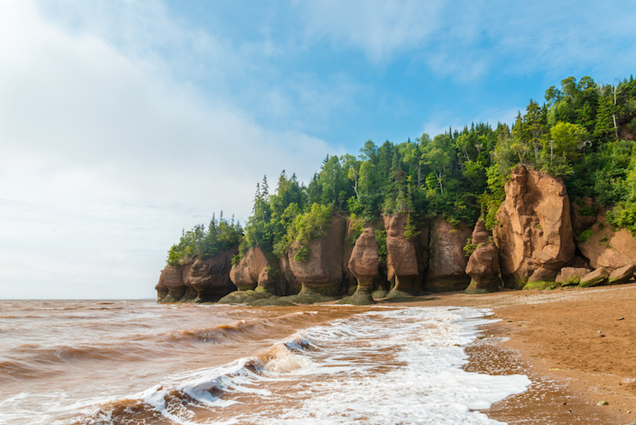
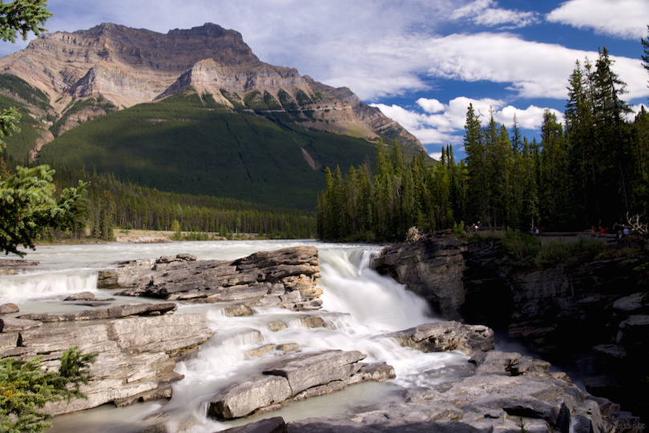
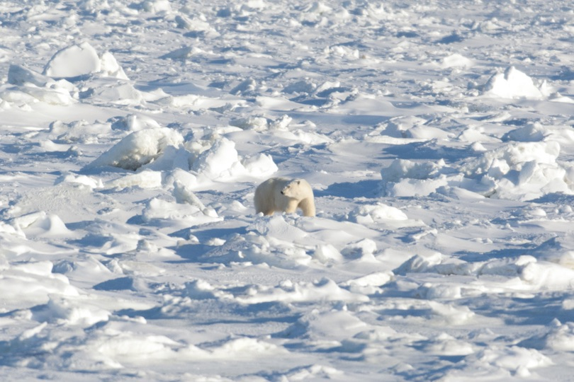
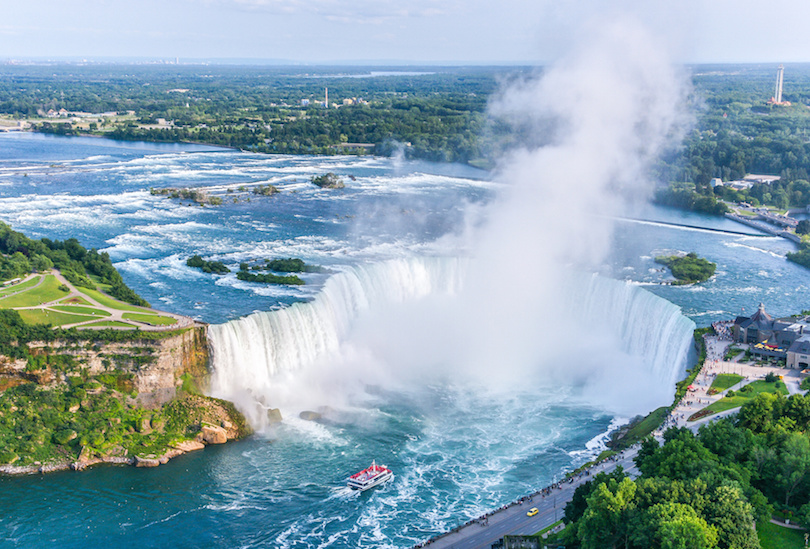
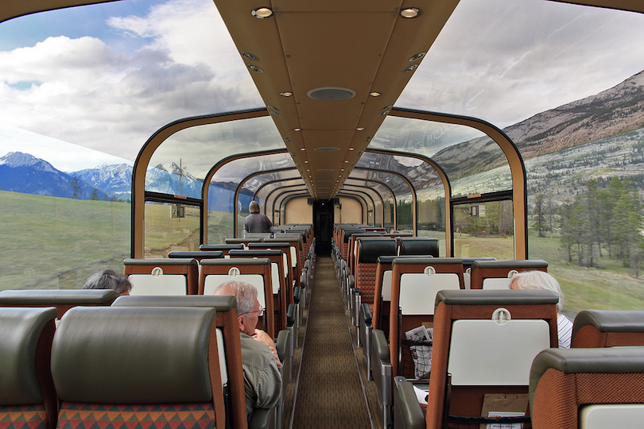
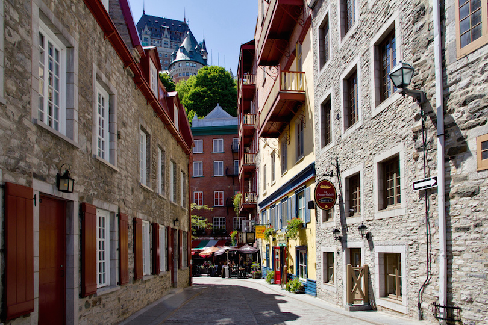
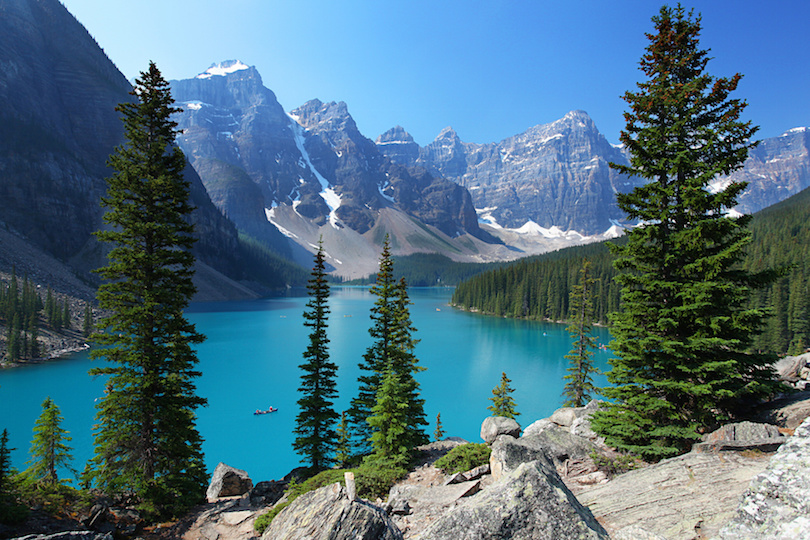

Gros Morne National Park in Newfoundland is important to the world, geologically, because the ancient rocks help people understand how the oceans and continents were created. The park is a nature lover’s paradise featuring lowlands along the Gulf of St. Lawrence and the alpine setting of the Long Range Mountains. The park is popular with wildlife viewers who’ll see everything from tiny songbirds to giant whales; black bears, moose and deer are common. Most visitors come here during the short summer season. The exception is the peak winter season (from February to April), when the park experiences another mini-boom in snowmobiling and cross-country skiing.
2. Calgary Stampede
The Calgary Stampede, one of the most famous rodeos in the world, traces its origins back to the traveling wild west shows of the late 1800s and early 1900s. The Stampede has grown over the years, today attracting the best cowboys in the world who compete for $2 million in prize money. Other activities include live concerts, a carnival, lots of food and dancing as this Canadian city hosts the best in the west. A 4 km (2.5 mile) parade opens what Calgary calls “the greatest outdoor show on earth”. The 10-day event is held every July.
3. Victoria's Inner Harbour

Victoria’s Inner Harbour on Vancouver Island is a cool place to visit. There’s the water on one side and stately government buildings on the other since Victoria is the capital of British Columbia. The city hosts a classic boat festival on Labour Day in September, with the harbor filling up with wooden boats. Visitors can also navigate the harbor on kayaks or tour boats. Take time out to have a traditional British tea at the Empress Hotel, a Victoria landmark since the early 1900s; it’s right across from the harbor.
4. Bay of Fundy

The Bay of Fundy, located on the Atlantic coast in eastern Canada, is famous for its high tidal range. Because of the unique shape of the bay, the difference in water level between high tide and low tide can be as much as 16 meters (52 feet). One of the best places to watch the tides are the Hopewell Rocks, a number of sandstone towers topped by trees. The base of the rock formations are covered in water twice a day and can be seen from the ground level at low tide.
5. Athabasca Falls

The next in your itinerary is Mazatlán. The town was once famoJasper National Park in the Alberta province is the largest of Canada’s Rocky Mountain Parks boasting broad valleys, rugged mountains, glaciers, forests, alpine meadows and wild rivers. One of the top attractions is Athabasca Falls, a beautiful waterfall that thunders through a narrow gorge. Even when the water level in the upper Athabasca River is low, huge quantities of water pour over the falls. Several viewing platforms and trails where it is safe to photograph the picturesque scene are located around the falls. Motorists can cross over the falls by taking Highway 93A into the town of Jasper.
6. Churchill

It may only be a small town of 1,000 residents in the Manitoba province on the Hudson Bay shore, but Churchill draws huge crowds every year to see its most famous inhabitants, the polar bears. Nicknamed the “Polar Bear Capital of the World,” it is one of the top tourist attractions in Canada. In addition to polar bears, Churchill is also a popular place for viewing beluga whales, birds and the aurora borealis.
7. Niagara Falls, Ontario

Many Americans think of Niagara Falls as being only a waterfall in the United States, namely New York, when in actuality, Niagara Falls is three falls on the border between the United States and Canada. Horseshoe Falls is the largest falls and is located mainly on the Canadian side, while the smaller American and Bridal Veil falls are mostly on the U.S. side. Combined, the three falls have a higher flow rate than any other in the world. About 20 million people visit here annually, with many of them taking a boat ride on Maid of the Mist, the falls’ oldest attraction.
8. The Canadian

In Los Cabos, the desert joins hands with the sea and thTravelers looking for a relaxing way to cross Canada may want to consider the train, in this case, the Canadian. Connecting Toronto and Vancouver, this is one of the world’s more famous train rides, traveling through the lakes of northern Ontario, the prairie provinces and the Canadian Rockies including Jasper National Park, to end at the cosmopolitan city of Vancouver. It takes 3 days to cover the 4,466 kilometers (2,775 miles) connecting the two cities. Via Rail recently spent $22 million modernizing the train.
9. Vieux-Quebec

Vieux-Québec, or Old Quebec, is an historic district in Quebec City. This is where the French explorer Samuel de Champlain founded Saint Louis Fort in 1608. The military presence here was strong under both the French and the British, with the area being heavily fortified. Today it is a tourist district with many small boutiques and hundreds of historical and photographic points of interest. Visitors will want to take in the Citadel, known as she “Gibraltar of the Americas,” because of its strategic location overlooking the St. Lawrence River. Visitors also will want to take in the iconic Chateau Frontenac, and enjoy the charm of European style shopping on Rue Saint Jean.
10. Moraine Lake

Moraine Lake, in Banff National Park is one of the most photographed places in western Canada. This glacier-fed lake is a gorgeous blue-green surrounded by mountains in Alberta. It’s located in the Valley of the Ten Peaks at an elevation of 1,885 meters (6,183 feet). The Rockpile Trail is popular with tourists who snap their photos at its end. At one time this alpine lake was featured on Canada’s $20 bill, earning this site the nickname of Twenty Dollar View. Other hiking trails offer spectacular views of the lake; visitors can get a different view by canoeing in it.